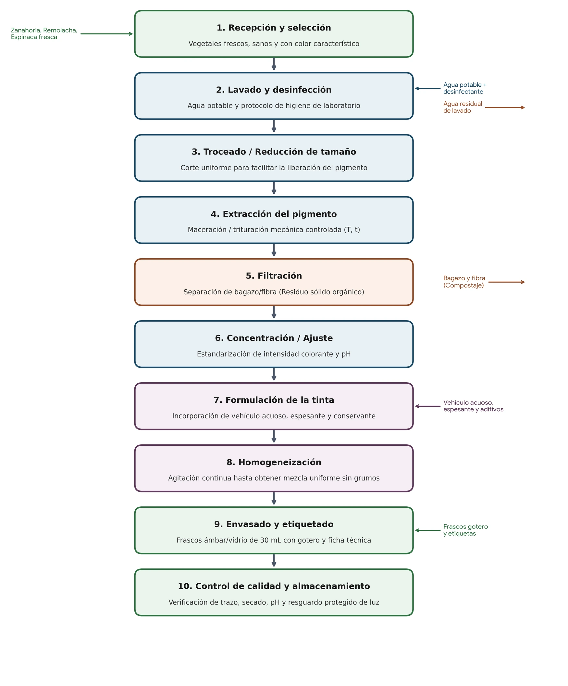

Ámbar-Naranja
Zanahoria · β-caroteno
Daucus carota L.
Amarillo anaranjado brillante, fluidez media y buena dispersión con espesante. Secó en 3–4 min sobre papel bond.
Ingeniería Agroindustrial · UNFLEP
¿Cómo convertir los pigmentos de zanahoria, remolacha y espinaca en tintas de base acuosa con color visible, fluidez y adherencia sobre papel?
Pruebas preliminares
El equipo ensayó las tres formulaciones sobre papel. Los hallazgos corresponden a la primera etapa de desarrollo del prototipo.
Zanahoria · β-caroteno
Daucus carota L.
Amarillo anaranjado brillante, fluidez media y buena dispersión con espesante. Secó en 3–4 min sobre papel bond.
Remolacha · Betanina
Beta vulgaris L.
Rojo intenso a magenta. El equipo observó un trazo continuo y homogéneo, sin sedimentos visibles durante la prueba.
Espinaca · Clorofilas a y b
Spinacia oleracea L.
Tono verde oliva a verde vegetal obtenido mediante extracción en frío. El informe recomienda proteger el envase de la luz.
La ficha propone aplicar las muestras codificadas sobre papel bond blanco de 75 g/m² y cartulina opalina, con una escala de 1 a 5 para los siguientes atributos.
La ficha incluida en el informe es un formato de registro. Los resultados preliminares son descriptivos e incluyen el tiempo de secado de la variante de zanahoria.
Operaciones de laboratorio
El diseño agroindustrial describe diez etapas. El vehículo acuoso y el espesante se incorporan al extracto para ajustar la consistencia de la tinta.
El protocolo incluye el color, la homogeneidad tras 24 horas de reposo, la fluidez, la continuidad del trazo, el tiempo de secado y la estabilidad en almacenamiento.
El proyecto propone compostar el bagazo limpio que queda en la filtración y recuperar los frascos de vidrio para reutilizarlos.

Datos del informe
La corrida de referencia parte de 1 000 g de hortaliza fresca. Las proporciones pueden variar con la humedad del vegetal.
Simulación didáctica con las proporciones del lote de referencia. El rendimiento a otras escalas sigue por comprobar.
| Extracto filtrado | 420 g · 42 % |
|---|---|
| Bagazo | 530 g · 53 % |
| Pérdidas de proceso | 50 g · 5 % |
Tinta estimada 500 g al sumar 80 g de vehículo y espesante al extracto.
Presupuesto de materiales e insumos para tres frascos de 30 mL, uno por color. Importes en córdobas nicaragüenses.
| Hortalizas | C$ 120,00 |
|---|---|
| Frascos de vidrio | C$ 75,00 |
| Etiquetas | C$ 36,00 |
| Insumos auxiliares | C$ 20,00 |
| Total de materiales | C$ 221,00 |
Equivale a C$ 73,67 de costo directo por frasco.
Alcance del prototipo
Fuentes
Los resultados, el proceso, el balance y el presupuesto proceden del informe universitario Elaboración de tinta de origen vegetal a partir de zanahoria, remolacha y espinaca (UNFLEP, 2026).